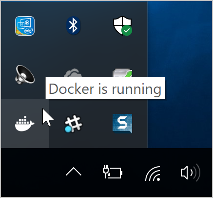
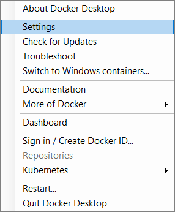
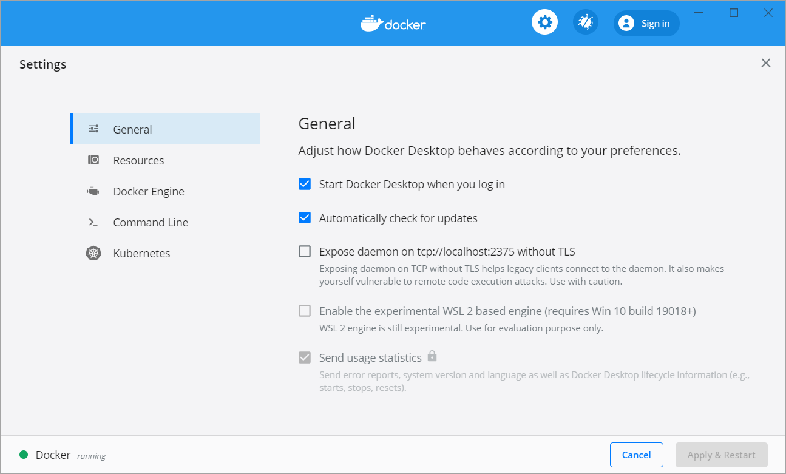
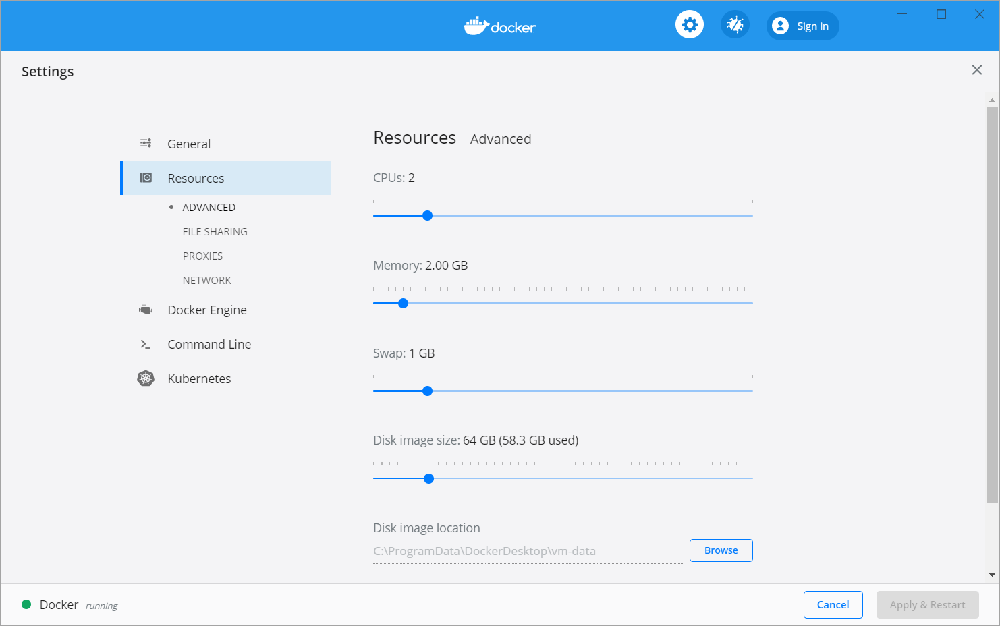
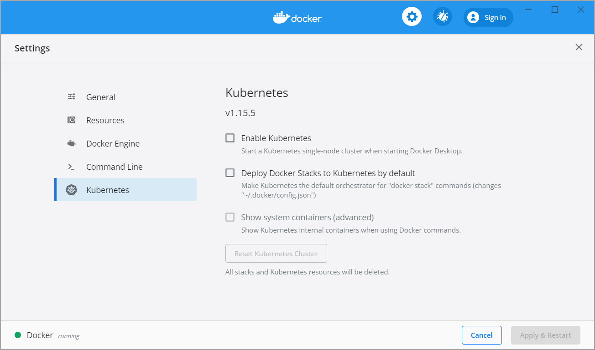
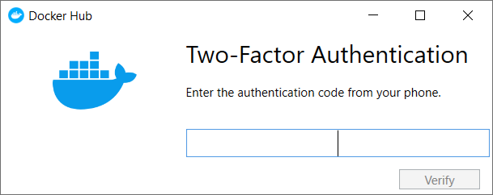

Get started with Docker for Windows¶
Estimated reading time: 21 minutes
Welcome to Docker Desktop!
The Docker Desktop for Windows section contains information about the Docker Desktop Community Stable release. For information about features available in Edge releases, see the Edge release notes. For information about Docker Desktop Enterprise (DDE) releases, see Docker Desktop Enterprise.
Docker is a full development platform to build, run, and share containerized applications. Docker Desktop is the best way to get started with Docker on Windows.
See Install Docker Desktop for download information, system requirements, and installation instructions.
Test your installation¶
-
Open a terminal window (Command Prompt or PowerShell, but not PowerShell ISE).
-
Run
docker --versionto ensure that you have a supported version of Docker:
> docker --version
Docker version 19.03.1
- Pull the hello-world image from Docker Hub and run a container:
> docker run hello-world
docker : Unable to find image 'hello-world:latest' locally
latest: Pulling from library/hello-world
1b930d010525: Pull complete
Digest: sha256:c3b4ada4687bbaa170745b3e4dd8ac3f194ca95b2d0518b417fb47e5879d9b5f
Status: Downloaded newer image for hello-world:latest
Hello from Docker!
This message shows that your installation appears to be working correctly.
...
- List the
hello-worldimage that was downloaded from Docker Hub:
> docker image ls
- List the
hello-worldcontainer (that exited after displaying “Hello from Docker!”):
> docker container ls --all
- Explore the Docker help pages by running some help commands:
> docker --help
> docker container --help
> docker container ls --help
> docker run --help
Explore the application¶
In this section, we demonstrate the ease and power of Dockerized applications by running something more complex, such as an OS and a webserver.
- Pull an image of the Ubuntu OS and run an interactive terminal inside the spawned container:
> docker run --interactive --tty ubuntu bash
docker : Unable to find image 'ubuntu:latest' locally
latest: Pulling from library/ubuntu
22e816666fd6: Pull complete
079b6d2a1e53: Pull complete
11048ebae908: Pull complete
c58094023a2e: Pull complete
Digest: sha256:a7b8b7b33e44b123d7f997bd4d3d0a59fafc63e203d17efedf09ff3f6f516152
Status: Downloaded newer image for ubuntu:latest
Do not use PowerShell ISE
Interactive terminals do not work in PowerShell ISE (but they do in PowerShell). See docker/for-win/issues/223.
- You are in the container. At the root
#prompt, check thehostnameof the container:
root@8aea0acb7423:/# hostname
8aea0acb7423
Notice that the hostname is assigned as the container ID (and is also used in the prompt).
- Exit the shell with the
exitcommand (which also stops the container):
root@8aea0acb7423:/# exit
>
- List containers with the
--alloption (because no containers are running).
The hello-world container (randomly named, relaxed_sammet) stopped after displaying its message. The ubuntu container (randomly named, laughing_kowalevski) stopped when you exited the container.
> docker container ls --all
CONTAINER ID IMAGE COMMAND CREATED STATUS PORTS NAMES
8aea0acb7423 ubuntu "bash" 2 minutes ago Exited (0) 2 minutes ago laughing_kowalevski
45f77eb48e78 hello-world "/hello" 3 minutes ago Exited (0) 3 minutes ago relaxed_sammet
- Pull and run a Dockerized nginx web server that we name,
webserver:
> docker run --detach --publish 80:80 --name webserver nginx
Unable to find image 'nginx:latest' locally
latest: Pulling from library/nginx
fdd5d7827f33: Pull complete
a3ed95caeb02: Pull complete
716f7a5f3082: Pull complete
7b10f03a0309: Pull complete
Digest: sha256:f6a001272d5d324c4c9f3f183e1b69e9e0ff12debeb7a092730d638c33e0de3e
Status: Downloaded newer image for nginx:latest
dfe13c68b3b86f01951af617df02be4897184cbf7a8b4d5caf1c3c5bd3fc267f
- Point your web browser at
http://localhostto display the nginx start page. (You don’t need to append:80because you specified the default HTTP port in thedockercommand.)

- List only your running containers:
> docker container ls
CONTAINER ID IMAGE COMMAND CREATED STATUS PORTS NAMES
0e788d8e4dfd nginx "nginx -g 'daemon of…" 2 minutes ago Up 2 minutes 0.0.0.0:80->80/tcp webserver
- Stop the running nginx container by the name we assigned it,
webserver:
> docker container stop webserver
- Remove all three containers by their names -- the latter two names will differ for you:
> docker container rm webserver laughing_kowalevski relaxed_sammet
Docker Settings dialog¶
The Docker Desktop menu allows you to configure your Docker settings such as installation, updates, version channels, Docker Hub login, and more.
This section explains the configuration options accessible from the Settings dialog.
- Open the Docker Desktop menu by clicking the Docker icon in the Notifications area (or System tray):

- Select Settings to open the Settings dialog:

General¶
On the General tab of the Settings dialog, you can configure when to start and update Docker.

-
Start Docker when you log in - Automatically start Docker Desktop upon Windows system login.
-
Automatically check for updates - By default, Docker Desktop automatically checks for updates and notifies you when an update is available. Click OK to accept and install updates (or cancel to keep the current version). You can manually update by choosing Check for Updates from the main Docker menu.
-
Expose daemon on tcp://localhost:2375 without TLS - Click this option to enable legacy clients to connect to the Docker daemon. You must use this option with caution as exposing the daemon without TLS can result in remote code execution attacks.
-
Send usage statistics - By default, Docker Desktop sends diagnostics, crash reports, and usage data. This information helps Docker improve and troubleshoot the application. Clear the check box to opt out. Docker may periodically prompt you for more information.
Click Switch to the Edge version to learn more about Docker Desktop Edge releases.
Resources¶
The Resources tab allows you to configure CPU, memory, disk, proxies, network, and other resources. Different settings are available for configuration depending on whether you are using Linux containers in WSL 2 mode, Linux containers in Hyper-V mode, or Windows containers.

ADVANCED¶
Note
The Advanced tab is only available in Hyper-V mode, because in WSL 2 mode and Windows container mode these resources are managed by Windows. In WSL 2 mode, you can configure limits on the memory, CPU, and swap size allocated to the WSL 2 utility VM.
Use the Advanced tab to limit resources available to Docker.
CPUs: By default, Docker Desktop is set to use half the number of processors available on the host machine. To increase processing power, set this to a higher number; to decrease, lower the number.
Memory: By default, Docker Desktop is set to use 2 GB runtime memory, allocated from the total available memory on your machine. To increase the RAM, set this to a higher number. To decrease it, lower the number.
Swap: Configure swap file size as needed. The default is 1 GB.
Disk image size: Specify the size of the disk image.
Disk image location: Specify the location of the Linux volume where containers and images are stored.
You can also move the disk image to a different location. If you attempt to move a disk image to a location that already has one, you get a prompt asking if you want to use the existing image or replace it.
FILE SHARING¶
Note
The File sharing tab is only available in Hyper-V mode, because in WSL 2 mode and Windows container mode all files are automatically shared by Windows.
Use File sharing to allow local directories on Windows to be shared with Linux containers. This is especially useful for editing source code in an IDE on the host while running and testing the code in a container. Note that configuring file sharing is not necessary for Windows containers, only Linux containers. If a directory is not shared with a Linux container you may get file not found or cannot start service errors at runtime. See Volume mounting requires shared folders for Linux containers.
File share settings are:
- Add a Directory: Click
+and navigate to the directory you want to add. - Apply & Restart makes the directory available to containers using Docker’s bind mount (
-v) feature.
Tips on shared folders, permissions, and volume mounts
- Shared folders are designed to allow application code to be edited on the host while being executed in containers. For non-code items such as cache directories or databases, the performance will be much better if they are stored in the Linux VM, using a data volume (named volume) or data container.
- Docker Desktop sets permissions to read/write/execute for users, groups and others 0777 or a+rwx. This is not configurable. See Permissions errors on data directories for shared volumes.
- Windows presents a case-insensitive view of the filesystem to applications while Linux is case-sensitive. On Linux it is possible to create 2 separate files:
testandTest, while on Windows these filenames would actually refer to the same underlying file. This can lead to problems where an app works correctly on a developer Windows machine (where the file contents are shared) but fails when run in Linux in production (where the file contents are distinct). To avoid this, Docker Desktop insists that all shared files are accessed as their original case. Therefore if a file is created calledtest, it must be opened astest. Attempts to openTestwill fail with “No such file or directory”. Similarly once a file calledtestis created, attempts to create a second file calledTestwill fail.
SHARED FOLDERS ON DEMAND¶
You can share a folder “on demand” the first time a particular folder is used by a container.
If you run a Docker command from a shell with a volume mount (as shown in the example below) or kick off a Compose file that includes volume mounts, you get a popup asking if you want to share the specified folder.
You can select to Share it, in which case it is added your Docker Desktop Shared Folders list and available to containers. Alternatively, you can opt not to share it by selecting Cancel.

PROXIES¶
Docker Desktop lets you configure HTTP/HTTPS Proxy Settings and automatically propagates these to Docker. For example, if you set your proxy settings to http://proxy.example.com, Docker uses this proxy when pulling containers.
Your proxy settings, however, will not be propagated into the containers you start. If you wish to set the proxy settings for your containers, you need to define environment variables for them, just like you would do on Linux, for example:
> docker run -e HTTP_PROXY=http://proxy.example.com:3128 alpine env
PATH=/usr/local/sbin:/usr/local/bin:/usr/sbin:/usr/bin:/sbin:/bin
HOSTNAME=b7edf988b2b5
TERM=xterm
HOME=/root
HTTP_PROXY=http://proxy.example.com:3128
For more information on setting environment variables for running containers, see Set environment variables.
NETWORK¶
Note
The Network tab is not available in Windows container mode because networking is managed by Windows.
You can configure Docker Desktop networking to work on a virtual private network (VPN). Specify a network address translation (NAT) prefix and subnet mask to enable Internet connectivity.
DNS Server: You can configure the DNS server to use dynamic or static IP addressing.
Note: Some users reported problems connecting to Docker Hub on Docker Desktop Stable version. This would manifest as an error when trying to run
dockercommands that pull images from Docker Hub that are not already downloaded, such as a first time run ofdocker run hello-world. If you encounter this, reset the DNS server to use the Google DNS fixed address:8.8.8.8. For more information, see Networking issues in Troubleshooting.
Updating these settings requires a reconfiguration and reboot of the Linux VM.
WSL INTEGRATION¶
In WSL 2 mode, you can configure which WSL 2 distributions will have the Docker WSL integration.
By default, the integration will be enabled on your default WSL distribution. To change your default WSL distro, run wsl --set-default <distro name>. (For example, to set Ubuntu as your default WSL distro, run wsl --set-default ubuntu).
You can also select any additional distributions you would like to enable the WSL 2 integration on.
For more details on configuring Docker Desktop to use WSL 2, see Docker Desktop WSL 2 backend.
Docker Engine¶
The Docker Engine page allows you to configure the Docker daemon to determine how your containers run.
Type a JSON configuration file in the box to configure the daemon settings. For a full list of options, see the Docker Engine dockerd commandline reference.
Click Apply & Restart to save your settings and restart Docker Desktop.
Command Line¶
On the Command Line page, you can specify whether or not to enable experimental features.
On both Docker Desktop Edge and Stable releases, you can toggle the experimental features on and off. If you toggle the experimental features off, Docker Desktop uses the current generally available release of Docker Engine.
EXPERIMENTAL FEATURES¶
Docker Desktop Edge releases have the experimental version of Docker Engine enabled by default, described in the Docker Experimental Features README on GitHub.
Experimental features provide early access to future product functionality. These features are intended for testing and feedback only as they may change between releases without warning or can be removed entirely from a future release. Experimental features must not be used in production environments. Docker does not offer support for experimental features.
To enable experimental features in the Docker CLI, edit the
config.jsonfile and setexperimentalto enabled.To enable experimental features from the Docker Desktop menu, click Settings (Preferences on macOS) > Command Line and then turn on the Enable experimental features toggle. Click Apply & Restart.
For a list of current experimental features in the Docker CLI, see Docker CLI Experimental features.
Run docker version to verify whether you have enabled experimental features. Experimental mode is listed under Server data. If Experimental is true, then Docker is running in experimental mode, as shown here:
> docker version
Client: Docker Engine - Community
Version: 19.03.1
API version: 1.40
Go version: go1.12.5
Git commit: 74b1e89
Built: Thu Jul 25 21:17:08 2019
OS/Arch: windows/amd64
Experimental: true
Server: Docker Engine - Community
Engine:
Version: 19.03.1
API version: 1.40 (minimum version 1.12)
Go version: go1.12.5
Git commit: 74b1e89
Built: Thu Jul 25 21:17:52 2019
OS/Arch: linux/amd64
Experimental: true
containerd:
Version: v1.2.6
GitCommit: 894b81a4b802e4eb2a91d1ce216b8817763c29fb
runc:
Version: 1.0.0-rc8
GitCommit: 425e105d5a03fabd737a126ad93d62a9eeede87f
docker-init:
Version: 0.18.0
GitCommit: fec3683
Kubernetes¶
Note
The Kubernetes tab is not available in Windows container mode.
Docker Desktop includes a standalone Kubernetes server that runs on your Windows host, so that you can test deploying your Docker workloads on Kubernetes.

The Kubernetes client command, kubectl, is included and configured to connect to the local Kubernetes server. If you have kubectl already installed and pointing to some other environment, such as minikube or a GKE cluster, be sure to change context so that kubectl is pointing to docker-desktop:
> kubectl config get-contexts
> kubectl config use-context docker-desktop
To enable Kubernetes support and install a standalone instance of Kubernetes running as a Docker container, select Enable Kubernetes.
To set Kubernetes as the default orchestrator, select Deploy Docker Stacks to Kubernetes by default.
By default, Kubernetes containers are hidden from commands like docker service ls, because managing them manually is not supported. To make them visible, select Show system containers (advanced). Most users do not need this option.
Click Apply & Restart to save the settings. This instantiates images required to run the Kubernetes server as containers, and installs the kubectl.exe command in the path.
-
When Kubernetes is enabled and running, an additional status bar item displays at the bottom right of the Docker Desktop Settings dialog. The status of Kubernetes shows in the Docker menu and the context points to
docker-desktop. -
To disable Kubernetes support at any time, clear the Enable Kubernetes check box. The Kubernetes containers are stopped and removed, and the
/usr/local/bin/kubectlcommand is removed. -
To delete all stacks and Kubernetes resources, select Reset Kubernetes Cluster.
-
If you installed
kubectlby another method, and experience conflicts, remove it.
For more information on using the Kubernetes integration with Docker Desktop, see Deploy on Kubernetes.
Reset¶
The Restart Docker Desktop and Reset to factory defaults options are now available on the Troubleshoot menu. For information, see Logs and Troubleshooting.
Troubleshoot¶
Visit our Logs and Troubleshooting guide for more details.
Log on to our Docker Desktop for Windows forum to get help from the community, review current user topics, or join a discussion.
Log on to Docker Desktop for Windows issues on GitHub to report bugs or problems and review community reported issues.
For information about providing feedback on the documentation or update it yourself, see Contribute to documentation.
Switch between Windows and Linux containers¶
From the Docker Desktop menu, you can toggle which daemon (Linux or Windows) the Docker CLI talks to. Select Switch to Windows containers to use Windows containers, or select Switch to Linux containers to use Linux containers (the default).
For more information on Windows containers, refer to the following documentation:
- Microsoft documentation on Windows containers.
- Build and Run Your First Windows Server Container (Blog Post) gives a quick tour of how to build and run native Docker Windows containers on Windows 10 and Windows Server 2016 evaluation releases.
- Getting Started with Windows Containers (Lab) shows you how to use the MusicStore application with Windows containers. The MusicStore is a standard .NET application and, forked here to use containers, is a good example of a multi-container application.
- To understand how to connect to Windows containers from the local host, see Limitations of Windows containers for
localhostand published ports
Settings dialog changes with Windows containers
When you switch to Windows containers, the Settings dialog only shows those tabs that are active and apply to your Windows containers:
If you set proxies or daemon configuration in Windows containers mode, these apply only on Windows containers. If you switch back to Linux containers, proxies and daemon configurations return to what you had set for Linux containers. Your Windows container settings are retained and become available again when you switch back.
Dashboard¶
The Docker Desktop Dashboard enables you to interact with containers and applications and manage the lifecycle of your applications directly from your machine. The Dashboard UI shows all running, stopped, and started containers with their state. It provides an intuitive interface to perform common actions to inspect and manage containers and Docker Compose applications. For more information, see Docker Desktop Dashboard.
Docker Hub¶
Select Sign in /Create Docker ID from the Docker Desktop menu to access your Docker Hub account. Once logged in, you can access your Docker Hub repositories directly from the Docker Desktop menu.
For more information, refer to the following Docker Hub topics:
Two-factor authentication¶
Docker Desktop enables you to sign into Docker Hub using two-factor authentication. Two-factor authentication provides an extra layer of security when accessing your Docker Hub account.
You must enable two-factor authentication in Docker Hub before signing into your Docker Hub account through Docker Desktop. For instructions, see Enable two-factor authentication for Docker Hub.
After you have enabled two-factor authentication:
- Go to the Docker Desktop menu and then select Sign in / Create Docker ID.
- Enter your Docker ID and password and click Sign in.
- After you have successfully signed in, Docker Desktop prompts you to enter the authentication code. Enter the six-digit code from your phone and then click Verify.

After you have successfully authenticated, you can access your organizations and repositories directly from the Docker Desktop menu.
Adding TLS certificates¶
You can add trusted Certificate Authorities (CAs) to your Docker daemon to verify registry server certificates, and client certificates, to authenticate to registries. For more information, see How do I add custom CA certificates? and How do I add client certificates? in the FAQs.
How do I add custom CA certificates?¶
Docker Desktop supports all trusted Certificate Authorities (CAs) (root or intermediate). Docker recognizes certs stored under Trust Root Certification Authorities or Intermediate Certification Authorities.
Docker Desktop creates a certificate bundle of all user-trusted CAs based on the Windows certificate store, and appends it to Moby trusted certificates. Therefore, if an enterprise SSL certificate is trusted by the user on the host, it is trusted by Docker Desktop.
To learn more about how to install a CA root certificate for the registry, see Verify repository client with certificates in the Docker Engine topics.
How do I add client certificates?¶
You can add your client certificates in ~/.docker/certs.d/<MyRegistry>:<Port>/client.cert and ~/.docker/certs.d/<MyRegistry>:<Port>/client.key. You do not need to push your certificates with git commands.
When the Docker Desktop application starts, it copies the ~/.docker/certs.d folder on your Windows system to the /etc/docker/certs.d directory on Moby (the Docker Desktop virtual machine running on Hyper-V).
You need to restart Docker Desktop after making any changes to the keychain or to the ~/.docker/certs.d directory in order for the changes to take effect.
The registry cannot be listed as an insecure registry (see Docker Daemon). Docker Desktop ignores certificates listed under insecure registries, and does not send client certificates. Commands like docker run that attempt to pull from the registry produce error messages on the command line, as well as on the registry.
To learn more about how to set the client TLS certificate for verification, see Verify repository client with certificates in the Docker Engine topics.
Where to go next¶
- Try out the walkthrough at Get Started.
- Dig in deeper with Docker Labs example walkthroughs and source code.
- Refer to the Docker CLI Reference Guide.